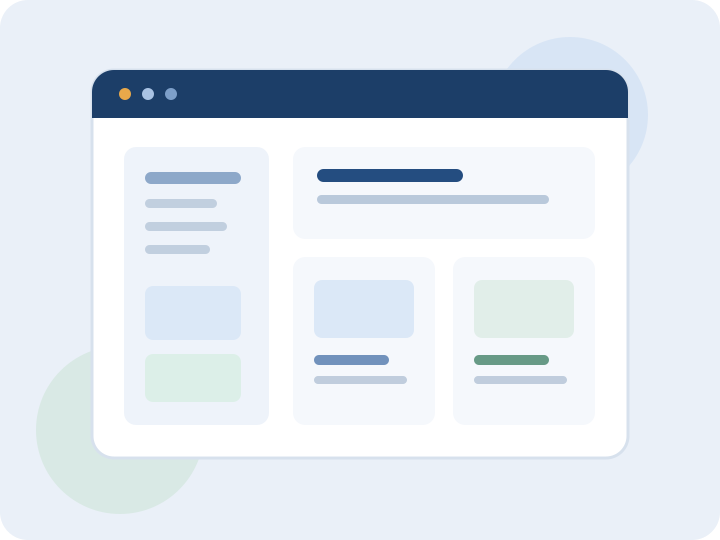

01
Desarrollo web
HTML, CSS y JavaScript para construir interfaces y páginas web.
Ver rutaAPRENDE · PRACTICA · CONSTRUYE
Consulta guías, repasa conceptos y practica con ejercicios organizados por tema.

Modo práctica Aprendizaje continuoBIBLIOTECA
Elige un tema y avanza a tu ritmo. Puedes consultar la documentación sin seguir un orden fijo.
01
HTML, CSS y JavaScript para construir interfaces y páginas web.
Ver ruta02
Práctica de lógica, algoritmos, estructuras y distintos lenguajes.
Ver ruta03
Diseño de tablas, relaciones, consultas y manejo de información.
Ver ruta04
Git, terminal, documentación y utilidades para trabajar mejor.
Ver rutaORGANIZA TU PRÁCTICA
Divide el aprendizaje en pasos pequeños y practica cada concepto antes de continuar.
Comprende el concepto y revisa ejemplos breves.
Escribe el código y comprueba qué sucede al cambiarlo.
Compara, corrige y anota qué conviene practicar otra vez.
PREGUNTAS FRECUENTES
No. Puedes entrar al tema que necesites y revisar los prerrequisitos indicados en su documentación.
No. Los documentos se pueden consultar directamente. Para ejecutar ejemplos necesitarás el entorno correspondiente al lenguaje.
Cada área tiene ejercicios con archivos iniciales y soluciones separadas para comparar después de intentarlo.
UN RECURSO PARA APRENDER